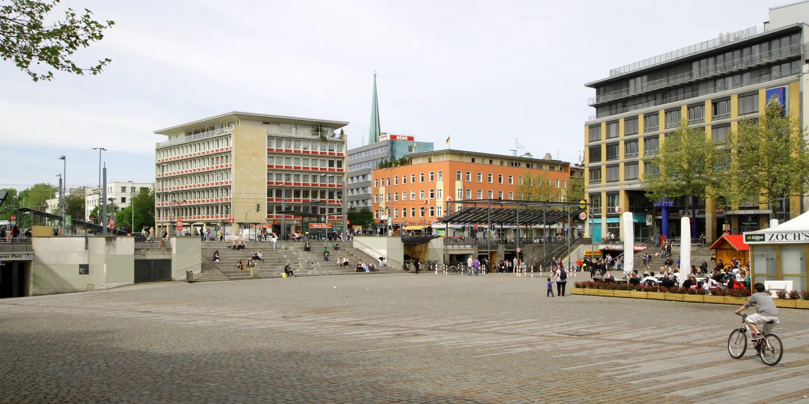

Immobilie in Köln-Mülheim verkaufen?Kölns größter Stadtteil — und der mit der größten Wohnungslücke.
43.182 Menschen leben hier, mehr als in jedem anderen der 86 Kölner Stadtteile. Sie verteilen sich auf 23.192 Haushalte, denen 22.158 Wohnungen gegenüberstehen. Die Lücke ist die größte der Stadt — und sie bestimmt, wie ein Verkauf hier läuft.
Was könnte Ihre Immobilie in Mülheim erzielen?
In sechs Schritten zu einer realistischen Einschätzung. Kostenlos, unverbindlich und ohne Vertrag. Womit fangen wir an?
Andere Objektart wählen23.192 Haushalte, 22.158 Wohnungen
Die Stadt Köln zählt für jeden Stadtteil beides getrennt: die Zahl der Haushalte und die Zahl der Wohnungen. In Mülheim liegen 1.034 Haushalte über dem Wohnungsbestand — die größte Lücke aller 86 Stadtteile. Dahinter folgen Kalk mit 707 und Meschenich mit 651.
Solche Zahlen sind keine exakte Bilanz der Wohnungsnot; Wohnheime, Untermietverhältnisse und Zweitwohnsitze wirken auf beide Größen unterschiedlich. Als Verhältniszahl bleibt der Befund trotzdem deutlich: In Mülheim wird jede Wohnung gebraucht.
Dazu passt die Fläche. Auf den einzelnen Bewohner entfallen hier 33,0 Quadratmeter Wohnfläche gegenüber 40,6 im Kölner Mittel. Die durchschnittliche Wohnung misst 64,3 Quadratmeter, gut dreizehn weniger als stadtweit. Mülheim ist Kölns größter Stadtteil — und einer der engsten.
Deshalb wird hier gebaut wie in kaum einem anderen Stadtteil
2025 kamen 189 neue Wohnungen hinzu, Rang sieben unter 86 Stadtteilen. Rechnerisch wären knapp sechs solcher Jahre nötig, um allein die heutige Lücke zu schließen — vorausgesetzt, es zöge in dieser Zeit niemand zu. Genau das ist unwahrscheinlich: Mit einem Durchschnittsalter von 40,4 Jahren gehört Mülheim zu den jüngeren Stadtteilen der Stadt, stadtweit sind es 42,7.
Für Sie als Eigentümer bedeutet das eine gute Ausgangslage, aber keine Selbstläufer-Situation. Nachfrage ist da; entscheidend ist, ob Ihr Objekt zu dem passt, was gesucht wird. Und gesucht wird in Mülheim anderes als in den linksrheinischen Innenstadtlagen: 17,0 Prozent der Haushalte leben mit Kindern, fast so viele wie im Kölner Mittel von 17,7 — in Altstadt-Süd sind es 7,4. Wohnungen mit drei oder mehr Zimmern finden hier also Abnehmer, anders als in der Innenstadt.
Ebenfalls untypisch für einen gefragten Stadtteil: 6,0 Prozent des Wohnungsbestands sind öffentlich gefördert und damit praktisch auf Höhe des Stadtwerts von 6,2 Prozent. In den Innenstadtlagen liegt der Anteil bei ein bis drei Prozent. Mülheim ist sozial gemischter als die Stadtteile, mit denen sein Preisniveau sonst verglichen wird — und das prägt auch den Käuferkreis.
Was dieselbe Wohnung links des Rheins kostet
Viele Käufer sehen sich beide Rheinseiten an. Stellen Sie eine Wohnfläche ein: Links steht, was sie in Mülheim gekostet hat, rechts dieselbe Fläche in zwei linksrheinischen Stadtteilen — und darunter, wie viel Fläche der Mülheimer Betrag dort bekäme.
Der Stadtteilschnitt liegt bei 64,3 m² je Wohnung.
Dieselbe Fläche kostet dort
- Köln-Neustadt-Süd 5.766 €/m²
- 461.000 €
- Köln-Altstadt-Süd 5.841 €/m²
- 467.000 €
Für den Mülheimer Betrag bekämen Sie dort
- Köln-Neustadt-Süd
- 52 m²
- Köln-Altstadt-Süd
- 51 m²
Rund 28 m² mehr Wohnfläche für dasselbe Geld.
Durchschnitte aus beurkundeten Kaufverträgen des Jahres 2025 und keine Bewertung Ihrer Wohnung. Der Vergleich zeigt Größenordnungen, keine gleichwertigen Objekte: Baujahr, Zustand, Ausstattung und Lage innerhalb des Stadtteils unterscheiden sich erheblich. Was Ihr Objekt erzielen kann, klärt die kostenlose Bewertung.
Warum die Wohnungen hier so aussehen, wie sie aussehen
Franz Carl Guilleaume eröffnete das Carlswerk im Sommer 1874. Produziert wurden Fahrdrähte, Freileitungsseile und Starkstromkabel; 1904 entstand hier das erste transatlantische Telefonkabel, das Europa mit Nordamerika verband. In den 1960er Jahren bot das Werk 23.560 Menschen Arbeit — mehr als die Hälfte dessen, was Mülheim heute an Einwohnern zählt.
Das erklärt den Wohnungsbestand besser als jede Marktanalyse. Ein Stadtteil, der Wohnraum für Zehntausende Industriearbeiter brauchte, wurde dicht und kompakt gebaut — nicht großzügig. Die 64,3 Quadratmeter Durchschnittsfläche von heute sind das Erbe dieser Jahrzehnte, ebenso wie die Blockrandbebauung entlang der Hauptstraßen und die Nachkriegs-Wohnzeilen dazwischen.
Für den Verkauf folgen daraus zwei praktische Punkte. Erstens: Der Zustand von Fenstern, Heizung und Dach entscheidet in diesem Bestand überdurchschnittlich viel, weil die Bausubstanz aus sehr verschiedenen Jahrzehnten stammt und Käufer das wissen. Ein aktueller Energieausweis und Klarheit über beschlossene Sanierungen der Eigentümergemeinschaft nehmen dem Gespräch die Unsicherheit.
Zweitens: Wo das Carlswerk stand, ist heute Platz. Auf dem Gelände an der Schanzenstraße sind Kultur- und Gewerbenutzungen entstanden, und der Wandel des Mülheimer Südens ist einer der Gründe für die hohe Bautätigkeit im Stadtteil. Wer eine Bestandswohnung verkauft, sollte wissen, was in Sichtweite geplant ist — Käufer fragen danach.
Marktdaten Köln-Mülheim
- Bodenrichtwert
- 530–1.090 €/m²Median 820 · 9 Zonen · Stichtag 1.1.2026
- Wohnung, Weiterverkauf
- 3.747 €/m²118 Kaufverträge 2025
- Wohnung, nach Aufteilung
- 4.991 €/m²18 Kaufverträge 2025
- Wohnungsbestand
- 22.158 Wohnungen64,3 m² im Schnitt · 189 Neubauten 2025
Amtliche Werte — Quellen und Methodik.
Der höchste Aufteilungsaufschlag Kölns
Eine Zahl fällt im Kölner Vergleich besonders auf. Wohnungen, die 2025 erstmals nach der Aufteilung eines Mietshauses verkauft wurden, erzielten in Mülheim 4.991 Euro je Quadratmeter gegenüber 3.747 im gewöhnlichen Weiterverkauf. Das sind 33,2 Prozent Aufschlag aus 18 Fällen — der höchste Wert aller Kölner Stadtteile mit auswertbarer Fallzahl. Zum Vergleich: Neustadt-Süd liegt bei 31 Prozent, Weiden bei 2.
Der Grund dürfte derselbe sein wie in den Innenstadtlagen: Der Aufschlag entsteht nicht durch die Aufteilung selbst, sondern durch das, was üblicherweise mit ihr einhergeht — eine sanierte, bezugsfrei übergebene Wohnung in einem Stadtteil, in dem Eigentum knapp ist. Und knapp ist es hier, siehe oben.
Wer mit dem Gedanken spielt, sollte trotzdem genau rechnen. Die Kosten für Abgeschlossenheitsbescheinigung, Teilungserklärung, Notar und Grundbuch fallen je Wohnung an. Dazu kommt die Mieterschutzverordnung NRW vom 1. März 2025, nach der bei umgewandelten und verkauften Wohnungen eine Kündigung wegen Eigenbedarfs oder zur Verwertung in Köln erst acht Jahre nach dem Verkauf möglich ist. Genehmigungspflichtig ist die Aufteilung in Nordrhein-Westfalen dagegen nicht — anders als in Bayern, Berlin und Hamburg hat das Land keine Verordnung nach § 250 Baugesetzbuch erlassen (Übersicht des Deutschen Notarinstituts vom 20. Januar 2026). Die Marktseite rechnen wir Ihnen vor, die rechtliche Prüfung gehört zu Notar oder Fachanwalt.
Neun Bodenrichtwertzonen von 530 bis 1.090 Euro
BORIS NRW teilt Mülheim zum 1. Januar 2026 in neun Wohnbauland-Zonen, der Median liegt bei 820 Euro je Quadratmeter. Zwischen der günstigsten und der teuersten Zone liegen 106 Prozent — der Boden am einen Ende des Stadtteils ist also gut doppelt so teuer wie am anderen. In einem Stadtteil dieser Größe ist das wenig überraschend und für die Bewertung dennoch entscheidend: Ein Durchschnittswert für „Mülheim" sagt über Ihre Adresse wenig aus.
Richtwerte, kein Preisschild. Für Ihr Objekt zählt der Zustand im Detail — dafür rechnen wir kostenlos eine Wertindikation oder kommen persönlich vorbei.
Ein Stadtteil dieser Größe hat mehrere Märkte
43.182 Einwohner auf einer Fläche, die von der Rheinuferstraße bis weit nach Osten reicht — Mülheim als eine Lage zu behandeln, führt bei der Bewertung in die Irre. Diese Bereiche sprechen unterschiedliche Käufer an:
Rund um den Wiener Platz liegt das Zentrum des Stadtteils und zugleich des ganzen Stadtbezirks. Stadtbahn, Geschäfte und Gastronomie sind fußläufig, der Platz selbst wurde Ende der 1990er Jahre vom Durchgangsverkehr befreit. Für Käufer ohne Auto ist das die stärkste Lage — ein Argument, das in Anzeigen oft nur als Adresse auftaucht statt als Nutzen.
Zum Rhein hin, zwischen Mülheimer Brücke und Rheinufer, zählen Blickbeziehungen und die Nähe zur Brücke als Verbindung nach links. Hier liegen die höheren Bodenrichtwertzonen, und hier ist der Abstand zu den linksrheinischen Preisen am kleinsten.
Um die Schanzenstraße und das frühere Carlswerk hat sich der Charakter am stärksten verändert. Aus dem Industriegelände sind Kultur- und Gewerbenutzungen geworden; die Nachbarschaft ist heute eine andere als vor zwanzig Jahren. Wer hier verkauft, verkauft an Käufer, die diesen Wandel ausdrücklich suchen — und sollte die Entwicklung im Exposé benennen, statt sie vorauszusetzen.
Entlang der Keupstraße und der Bergisch Gladbacher Straße prägt kleinteiliger Einzelhandel das Bild, dahinter liegen ruhigere Wohnstraßen. Der Unterschied zwischen Vorder- und Hinterhaus, zwischen Straßen- und Hofseite, ist in dieser Bebauung besonders groß — und schlägt sich im Preis nieder. Wer eine Wohnung zum Hof hat, sollte das ausdrücklich erwähnen.
Im Osten des Stadtteils, Richtung Buchheim und Holweide, wird die Bebauung lockerer und die Bodenrichtwerte fallen. Hier findet sich, was in Mülheim sonst selten ist: Wohnungen mit mehr Fläche und gelegentlich ein Haus.
Was in allen Lagen zählt
Bei einer durchschnittlichen Wohnungsgröße von 64,3 Quadratmetern und einem Stadtteil, in dem 17 Prozent der Haushalte mit Kindern leben, ist die Zimmerzahl oft wichtiger als die reine Fläche. Eine Dreizimmerwohnung auf 72 Quadratmetern trifft hier einen größeren Käuferkreis als zwei Zimmer auf 80. Dazu kommen die Fragen, die im gemischten Altbaubestand immer früh gestellt werden: Energieausweis, Heizung, Fenster, Zustand des Dachs, Höhe der Rücklage.
Auch tätig im Stadtbezirk Mülheim und Umgebung:
Was Eigentümer in Mülheim am häufigsten fragen
Bei 118 ausgewerteten Weiterverkäufen lag der Durchschnitt 2025 bei 3.747 Euro je Quadratmeter. Für eine durchschnittlich große Wohnung von 64,3 Quadratmetern sind das rechnerisch rund 241.000 Euro. Mülheim ist allerdings mit 43.182 Einwohnern der größte Stadtteil Kölns und hat neun verschiedene Bodenrichtwertzonen — der Abstand zwischen günstigster und teuerster beträgt 106 Prozent. Ein Durchschnittswert für den ganzen Stadtteil sagt über Ihre Adresse deshalb wenig aus. Hinzu kommen Etage, Aufzug, Zustand, Grundriss, Ausrichtung, Hausgeld und Rücklage.
Es ist eine gute Ausgangslage, aber kein Selbstläufer. In Mülheim stehen 23.192 Haushalten 22.158 Wohnungen gegenüber, die größte Lücke aller 86 Kölner Stadtteile. Nachfrage ist also vorhanden. Entscheidend bleibt, ob Ihr Objekt zu dem passt, was gesucht wird, und ob der Einstiegspreis stimmt. Ein zu hoch angesetzter Preis verliert auch in einem knappen Markt die aufmerksamsten Interessenten — und die schauen in den ersten beiden Wochen.
Der Abstand ist erheblich: 3.747 Euro je Quadratmeter gegenüber 5.766 in Neustadt-Süd und 5.841 in Altstadt-Süd. Gründe sind die industrielle Prägung, die Entfernung zur linksrheinischen Innenstadt und ein sozial gemischterer Bestand — 6,0 Prozent der Wohnungen sind öffentlich gefördert gegenüber ein bis drei Prozent in den Innenstadtlagen. Für Käufer bedeutet der Abstand vor allem Fläche: Für den Preis einer 80-Quadratmeter-Wohnung in Mülheim bekämen sie in der Südstadt rund 52 Quadratmeter. Genau mit diesem Argument lässt sich hier verkaufen.
Die Zahlen sprechen dafür wie in keinem anderen Kölner Stadtteil: Der Erstverkauf nach Aufteilung lag 2025 bei 4.991 Euro je Quadratmeter gegenüber 3.747 im Bestand — 33,2 Prozent Aufschlag aus 18 Fällen, der höchste Wert der Stadt. Gegenzurechnen sind die Kosten je Wohnung für Abgeschlossenheitsbescheinigung, Teilungserklärung, Notar und Grundbuch sowie Ihre steuerliche Lage. Wichtig ist außerdem die Mieterschutzverordnung NRW vom 1. März 2025: Bei umgewandelten und verkauften Wohnungen ist eine Eigenbedarfskündigung in Köln erst acht Jahre nach dem Verkauf möglich, was den Käuferkreis auf Kapitalanleger verengt. Genehmigungspflichtig ist die Aufteilung in NRW nicht. Wir rechnen beide Wege durch; die rechtliche Prüfung gehört zu Notar oder Fachanwalt.
Das hängt stark von der Adresse ab. BORIS NRW weist zum 1. Januar 2026 neun Wohnbauland-Zonen zwischen 530 und 1.090 Euro je Quadratmeter aus, der Median liegt bei 820. Zwischen günstigster und teuerster Zone liegen 106 Prozent — der Boden am einen Ende des Stadtteils ist gut doppelt so teuer wie am anderen. Tendenziell steigen die Werte zum Rhein hin und fallen nach Osten Richtung Buchheim und Holweide. Hinzu kommen Zuschnitt, Bebaubarkeit, Geschossflächenzahl, vorhandene Bebauung und Baulasten.
Pauschal lässt sich das nicht beziffern, aber in Mülheim fällt der Unterschied größer aus als in vielen anderen Stadtteilen. Entlang der Hauptachsen wie der Bergisch Gladbacher Straße oder der Keupstraße steht kleinteiliger Einzelhandel, dahinter liegen deutlich ruhigere Wohnstraßen und Höfe. Entscheidend sind Ausrichtung der Wohnräume, Fensterqualität und ob das Schlafzimmer zum Hof geht. Wer eine Hoflage hat, sollte das ausdrücklich erwähnen — es ist hier ein echtes Verkaufsargument und wird in Anzeigen regelmäßig unterschlagen.
In der Tendenz ja. 17,0 Prozent der Mülheimer Haushalte leben mit Kindern, fast so viele wie im Kölner Mittel von 17,7 — in den Innenstadtlagen sind es sieben bis elf Prozent. Familien suchen Zimmer, nicht Quadratmeter. Eine Dreizimmerwohnung auf 72 Quadratmetern trifft deshalb häufig einen größeren Kreis als zwei Zimmer auf 80. Das gilt nicht absolut: Ein schlecht geschnittener dritter Raum ohne Tageslicht bringt keinen Vorteil.
Das Carlswerk war ab 1874 eine der größten Fabriken der Region und bot in den 1960er Jahren 23.560 Menschen Arbeit. Auf dem Gelände an der Schanzenstraße sind heute Kultur- und Gewerbenutzungen entstanden. Für den Wohnungsmarkt heißt das: Die Nachbarschaft ist eine andere als vor zwanzig Jahren, und der Wandel des Mülheimer Südens ist einer der Gründe für die hohe Bautätigkeit im Stadtteil — 189 neue Wohnungen allein 2025, Rang sieben unter 86 Stadtteilen. Käufer fragen danach, was in Sichtweite geplant ist. Diese Frage sollten Sie beantworten können, bevor sie gestellt wird.
Für Häuser bildet der Grundstücksmarktbericht in Mülheim keinen eigenen Durchschnitt — es werden zu wenige und zu unterschiedliche gehandelt. Ein Haus wird als Gesamtobjekt bewertet: Grundstücksgröße und Bodenrichtwertzone, Baujahr und Sanierungsstand, Energieträger, Zimmerzahl und Grundriss, Außenflächen, Stellplätze und Ausbaureserven. Gerade in Mülheim lohnt der genaue Blick auf die Zone, weil die Spanne im Stadtteil 106 Prozent beträgt und der Bodenwert bei einem Haus einen erheblichen Teil des Gesamtwerts ausmacht.
Nein. Die Bewertungsanfrage ist kostenlos und unverbindlich. Durch die Anfrage entsteht kein Maklerauftrag.
Bildnachweis: Wiener Platz und Carlswerk, Haupteingang Schanzenstraße: HOWI – Horsch, Willy, CC BY 3.0 · Wassertreppe am Wiener Platz: Raimond Spekking, CC BY-SA 4.0, alle über Wikimedia Commons. Marktdaten: Gutachterausschuss für Grundstückswerte in der Stadt Köln (Grundstücksmarktbericht 2026, Berichtsjahr 2025), BORIS NRW zum 1. Januar 2026, Stadt Köln – Amt für Stadtentwicklung und Statistik (Einwohner, Haushalte und Wohnungsbestand zum 31. Dezember 2025). Angaben zum Carlswerk und zum Wiener Platz nach Wikipedia. Rechtsstand: § 250 BauGB nach der Übersicht des Deutschen Notarinstituts vom 20. Januar 2026, Mieterschutzverordnung NRW vom 1. März 2025. Keine Rechtsberatung.
Was ist Ihre Immobilie in Köln-Mülheim wert?
Kostenlos, unverbindlich, diskret — und mit Blick auf das Veedel.